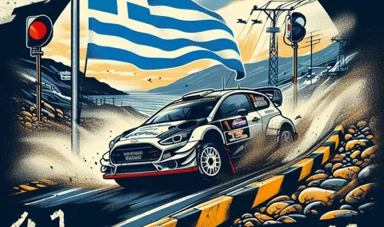
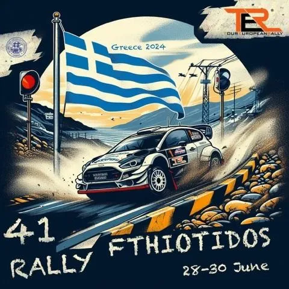
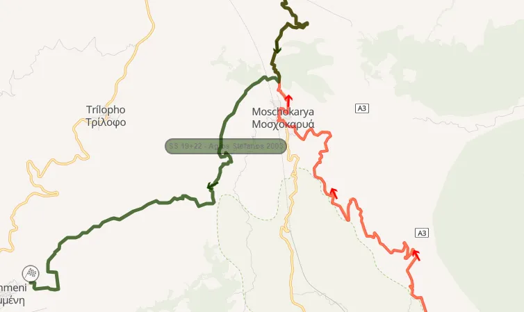
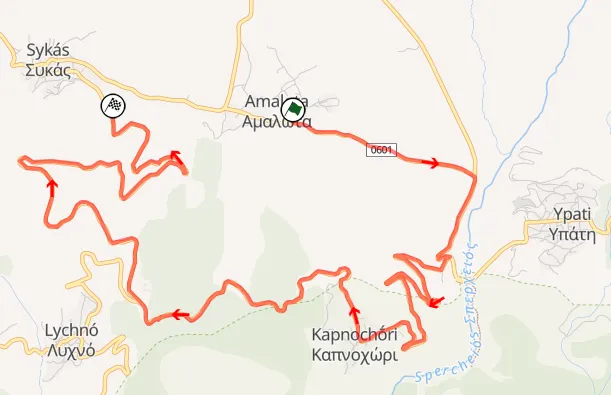
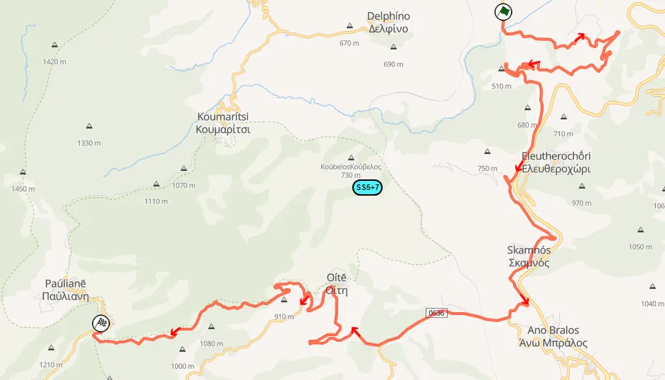
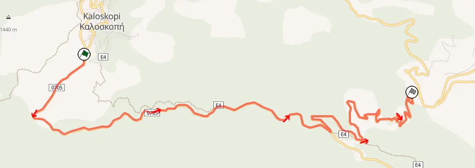

Ανάλυση της διαδρομής του Ράλλυ Φθιώτιδος
Η Ελληνική άσφαλτος επιστρέφει στη διεθνή σκηνή με το Ράλλυ Φθιώτιδος στις 28 με 30 Ιουνίου. Ο αγώνας με κέντρο την Λαμία θα είναι ο 4ος γύρος του πρωταθλήματος Tour European Rally, μαζί με άλλα αξιοσημείωτα Ευρωπαϊκά ράλλυ, όπως το Rally Sierra Morena που θα είναι στο ERC του χρόνου, το Azores Rally στον Ατλαντικό, και το Rallye d'Antibes - Côte d'Azur, που χρησιμοποιεί ειδικές από το Rally Monte-Carlo. Το γεγονός ότι το Ράλλυ Φθιώτιδος είναι στο TER, σημαίνει επίσης ότι ο αγώνας είναι μεγαλύτερος από τους αγώνες στο Πανελλήνιο Πρωτάθλημα, με 82 χιλιόμετρα ειδικών, με μόνο την Κυριακή να προσμετράται στο πρωτάθλημα ασφάλτου. Η φετινή έκδοση του ράλλυ χρησιμοποιεί διαδρομές που έχουμε ξαναδεί στο παρελθόν, αλλά και καινούριες ειδικές. Την Παρασκευή θα υπάρχει shakedown, με την τοποθεσία αυτού να είναι άγνωστη αυτή τη στιγμή, και ο αγώνας ξεκινά το Σάββατο.

Η αφίσα του αγώνα
Σάββατο
ΕΔ 1/3 Μοσχοκαρυά
Η Μοσχοκαρυά χρησιμοποιεί την διαδρομή της ομόνυμης ανάβασης που ξεκινά από την Στύρφακα, αλλά συνεχίζει και μετά το τέλος της, μέχρι τον Άγιο Στέφανο. Η ειδική δεν έχει χρησιμοποιηθεί ξανά ολόκληρη σε ασφάλτινο αγώνα, με την τελευταία φορά που είδαμε αυτή να χρησιμοποιείται ολόκληρη σε διεθνή αγώνα, να είναι στο Ράλλυ Ακρόπολις του 1987, όταν ήταν χωμάτινη! Το 2ο μισό της είχε χρησιμοποιηθεί επίσης στο Ρα΄΄΄λλυ Ακρόπολις 20 χρόνια πριν, το 2004, ως η εκκίνηση του Άγιου Στέφανου.

Η ειδική που θα χρησιμοποιηθεί στον φετινό αγώνα με κόκκινο. Με πράσινο ο Άγιος Στέφανος του 2004.
Φωτογραφία από το Rally Maps.
Η ειδική ξεκινάει σε ενάν σχετικά στενό, ανηφορικό δρόμο με καλή άσφαλτο, με αρκετές τεχνικές στροφές και φουρκέτες. Προς το τέλος της κλασικής διαδρομής της ανάβασης, ο δρόμος γίνεται πιο γρήγορος, αλλά παραμένει εξίσου τεχνικός, με πάρα πολλές συνεχόμενες στροφές η μία μετά την άλλη. Μετά το τέλος του κομματίου της ανάβασης, η ειδική κατηφορίζει, σε ένα στενό και αργό κομμάτι πριν φτάσει στη Μοσχοκαρυά, όπου και περνάει μέσα από το χωρίο. Μετά από το χωριό, ο δρόμος ανηφορίζει για περίπου 2 χιλιόμετρα, και έπειτα γίνεται κατηφόρα μέχρι το τέλος της ειδικής. Αυτό το κομμάτι έχει αρκετές φουρκέτες, αλλά και γρήγορες στροφές.
Βίντεο της ειδικής από το κανάλι Greek Rally Passion
ΕΔ 2/4 Υπάτη

Η ειδική που θα χρησιμοποιηθεί στον φετινό αγώνα.
Φωτογραφία από το Rally Maps.
Η Υπάτη είναι μία ολοκαίνουρια ειδική που δεν έχει ξαναχρησιμοποιηθεί! Η ειδική ξεκινά κοντά στο χωριό Αμαλώτα, με ένα γρήγορο κομμάτι, σε σχετικά "σπασμένη" άσφαλτο. Μετά από 2 χιλιόμετρα η ειδική αλλάζει μορφή, με τα γρήγορα κομμάτια να αντικαθίστονται από σειρές από φουρκέτες! Η ειδική στη συνέχεια περνά από το Καπνοχώρι και από το σημείο θέασης κάτω από τον Προφήτη Ηλία. Αυτό το σημείο θυμίζει λίγο Μόντε Κάρλο, ή Μπράλο, με μια αριστερή στροφή διαρκείας να έχει αριστερά της το βουνό και δεξιά τσιμεντόλιθους που είναι εκεί για να ανακόψουν μια πτώση στην από κάτω κοιλάδα.
Η στροφή μετά από το σημείο θέασης
Μετά από αυτό το κομμάτι, η Υπάτη περνάει από την Μονή Αγάθωνος, και στην διχάλα που κάνει ο δρόμος, η ειδική στενεύει και έχει ένα μικρό άλμα ή χάσιμο. Μετά από αυτό, η ειδική γίνεται πιο γρήγορη και φαρδιά και τελειώνει με ένα γρήγορο κατηφορικό κομμάτι που έχει και αυτό κάποιες φουρκέτες.
Βίντεο της ειδικής από το κανάλι Greek Rally Passion
Κυριακή
ΕΔ 5/7 Μπράλος - Παύλιανη

Η ειδική που θα χρησιμοποιηθεί στον φετινό αγώνα.
Φωτογραφία από το Rally Maps.
Η μαραθώνια ειδική των 30 χιλιομέτρων είναι η πρώτη ειδική της Κυριακής, και η μεγαλύτερη ειδική του αγώνα. H διαδρομή είναι ίδια με το περσινό Ρα΄΄λλυ Φθιώτιδος, δηλαδή είναι οι κλασικές ειδικές του Μπράλου και της Παύλιανης ενωμένες. Η ειδική ξεκινά πριν από τη γέφυρα που περνά πάνω από τον Ασωπό, και για τα πρώτα περίπου 9 χιλιόμετρα ακολουθεί έναν ανηφορικό δρόμο, με γρήγορα κομμάτια, αλλά και πολλές φουρκέτες. Μετά από αυτό, η ειδική γίνεται πιο φαρδιά και γρήγορη, με πολλά φλατ κομμάτια. Στο παρελθόν υπήρχαν σικέιν σε κάποια σημεία, κάτι που κατά πάσα πιθανότητα θα γίνει και φέτος. Στη συνέχεια, η ειδική γίνεται κατηφορική, πολύ πιο στενή και με "σπασμένη" άσφαλτο, με τον δρόμο να περνά από το περίφημο σημείο "Μόντε Μπράλο" πριν από τον Σκαμνό. Αυτό το σημείο ε΄χει αυτό το ψευδώνυμο, γιατί θυμίζει την ειδική Aiglun στο Ράλλυ Μόντε Κάρλο!
Το κομμάτι "Μοντε Μπράλο"
Αμέσως μετά ακολουθεί το άλμα στον Σκαμνό, που ήταν highlight του περσινού Ράλλυ. Μετά τον Σκαμνό, η ειδική γίνεται πιο φαρδιά και γρήγορη, ακολουθόντας πλέον τη διαδρομή της Πάυλιανης. Τα επόμενα 3 χιλιόμετρα είναι πολύ γρήγορα, και σίγουρα θα υπάρχουν σικέιν τοποθετημένα από τους διοργανωτές. Προσεγγίζοντας την Οίτη, η ειδική γίνεται ελαφρώς ανηφορική, και πιο twisty, και τερματίζει πριν την Νέα Πάυλιανη.
ΕΔ 6/8 Καλοσκοπή

Η ειδική που θα χρησιμοποιηθεί στον φετινό αγώνα.
Φωτογραφία από το Rally Maps.
Η έταιρη ειδική της ημέρας είναι και αυτή μία που είναι απαράλλακτη σε σχέση με τον περσινό αγώνα. Η ειδική ξεκινά αμέσως μετά την Καλοσκοπή, με ένα γρήγορο κατηφορικό κομμάτι, με πολλές συνεχόμενες στροφές, σε καλή, smooth άσφαλτο. 6 χιλιόμετρα μετά την εκκίνηση, η ειδική στρίβει αριστερά σε έναν κατηφορικό, στενό δρόμο, προς το Χάνι Ζαγγανά. Για τα υπόλοιπα περίπου 4 χιλιόμετρα η ειδική είναι γεμάτη φουρκέτες και τεχνικά αργά κομμάτια, σε ίσως το πιο τεχνικό κομμάτι του αγώνα! Η ειδική τερματίζει λίγο πριν συναντήσει τον δρόμο προς τα Καστέλλια.
Onboard της ειδικής από το κανάλι Frames Per Second
Δημήτρης Θεοδώρου


Comments